Two Feet

Two Feet is New York singer, guitarist and producer Bill Dess. “Go Fuck Yourself” and “I Feel Like I’m Drowning” are both certified Gold, and the latter reached No. 1 on Billboard’s Alternative Songs chart in 2018. He founded 477 Records.
Releases25
All 112 releases Two Feet (Part 2)Two FeetOut Dec 25Apple Music
Two Feet (Part 2)Two FeetOut Dec 25Apple Music I can smell them on your dressTwo FeetOct 2026SpotifyApple MusicYouTube
I can smell them on your dressTwo FeetOct 2026SpotifyApple MusicYouTube I don't think you love meTwo FeetOct 2026SpotifyApple MusicYouTube
I don't think you love meTwo FeetOct 2026SpotifyApple MusicYouTube P2 OvertureTwo FeetOct 2026SpotifyApple MusicYouTube
P2 OvertureTwo FeetOct 2026SpotifyApple MusicYouTube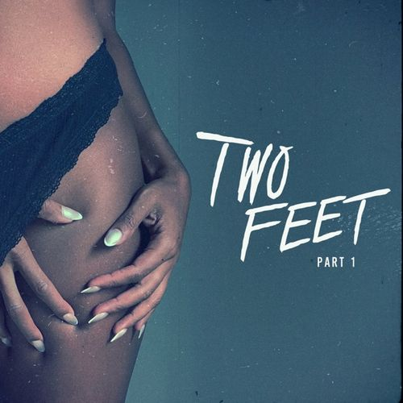
Two Feet (Part 1)Two FeetSep 2026SpotifyApple MusicYouTube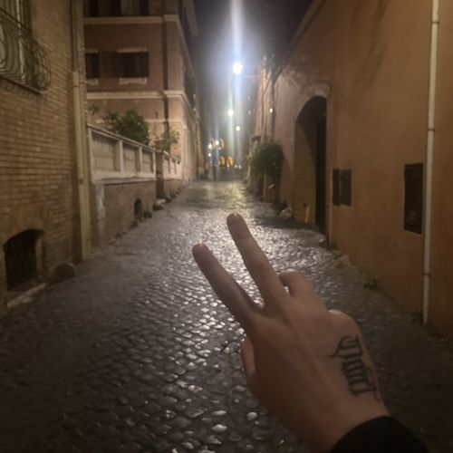
Rich girlTwo FeetAug 2026SpotifyApple MusicYouTube So lostTwo FeetJul 2026SpotifyApple MusicYouTube
So lostTwo FeetJul 2026SpotifyApple MusicYouTube Do I Ever Belong?Two FeetJul 2026SpotifyApple MusicYouTube
Do I Ever Belong?Two FeetJul 2026SpotifyApple MusicYouTube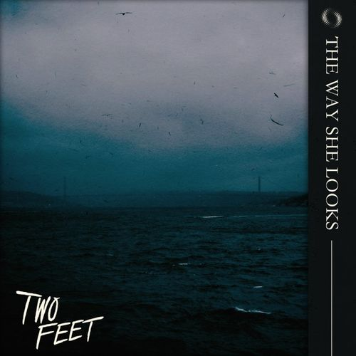
The Way She LooksTwo FeetMar 2026SpotifyApple MusicYouTube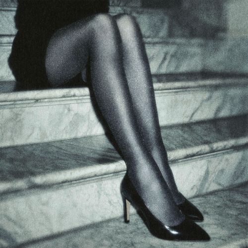
LingerieTwo FeetSep 2025SpotifyApple MusicYouTube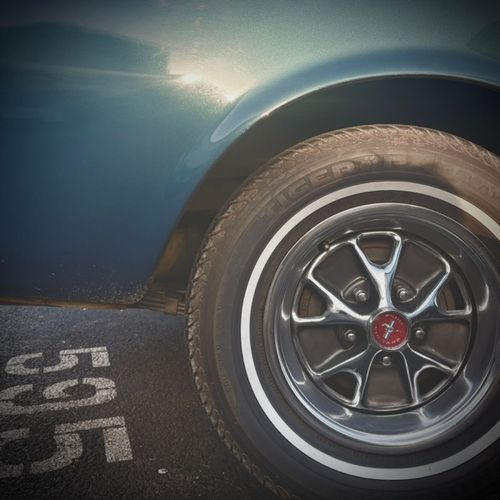
No Puedo EscaparTwo FeetAug 2025SpotifyApple MusicYouTube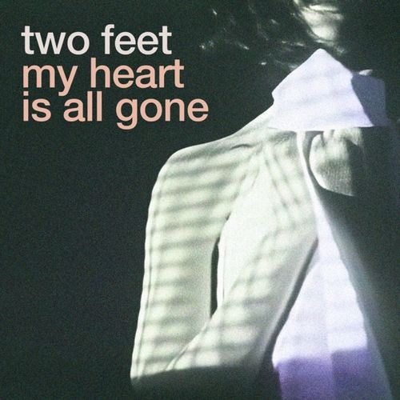
My Heart Is All GoneTwo FeetJun 2025SpotifyApple MusicYouTube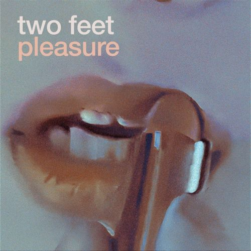
PleasureTwo FeetFeb 2025SpotifyApple MusicYouTube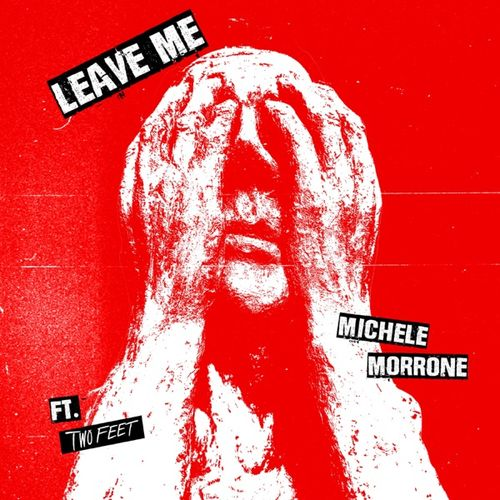
Leave Me (feat. Two Feet)Michele MorroneOct 2024SpotifyApple MusicYouTube Darling, I'm on Your SideTwo FeetAug 2024SpotifyApple MusicYouTube
Darling, I'm on Your SideTwo FeetAug 2024SpotifyApple MusicYouTube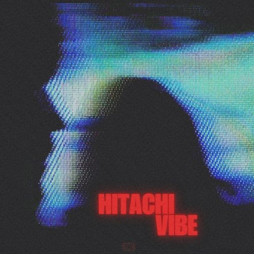
Hitachi VibeTwo FeetJun 2024SpotifyApple MusicYouTube Let Me GoTwo FeetJun 2024SpotifyApple MusicYouTube
Let Me GoTwo FeetJun 2024SpotifyApple MusicYouTube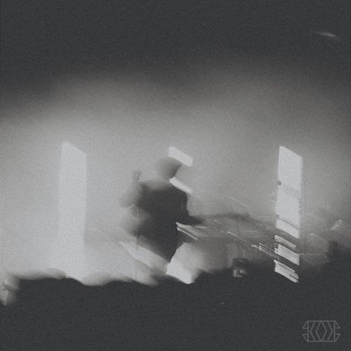
Falling to PiecesTwo FeetMar 2024SpotifyApple MusicYouTube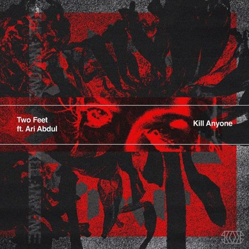
KILL ANYONE (feat. Ari Abdul)Two FeetDec 2023SpotifyApple MusicYouTube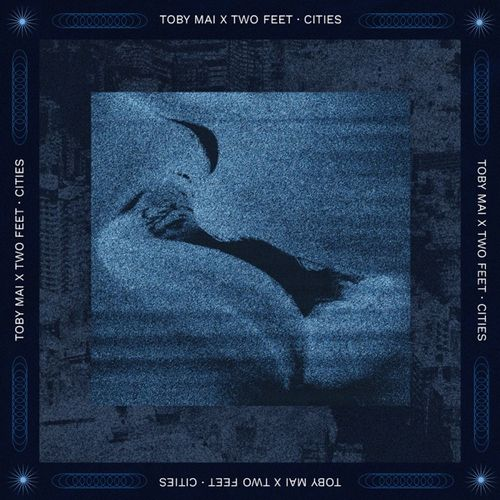
CitiesTwo Feet & Toby MaiSep 2023SpotifyApple MusicYouTube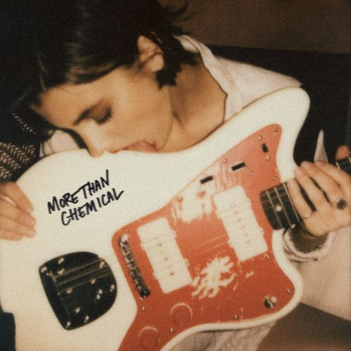
More Than Chemical (feat. Two Feet)Bec Lauder and The NoiseJun 2023SpotifyApple MusicYouTube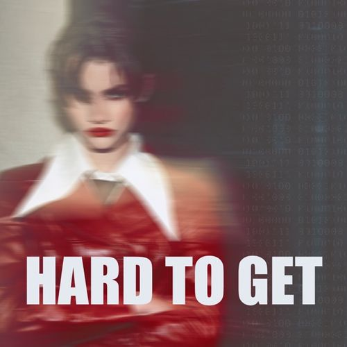
Hard To Get (feat. Two Feet)Bec Lauder and The NoiseMay 2023SpotifyApple MusicYouTube Take Me HomeBec Lauder and The Noise & Two FeetMar 2023SpotifyApple MusicYouTube
Take Me HomeBec Lauder and The Noise & Two FeetMar 2023SpotifyApple MusicYouTube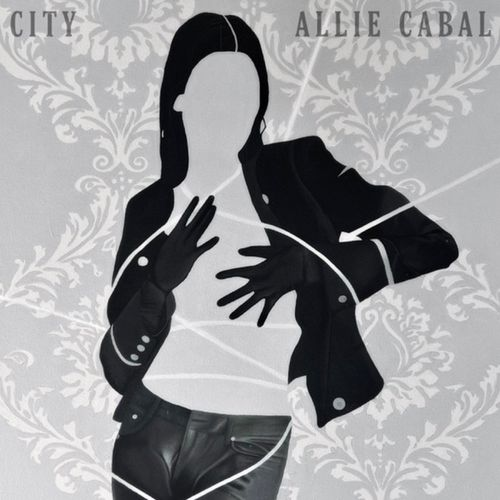
CityTwo Feet & Allie CabalMar 2023SpotifyApple MusicYouTube I Want You DeadTwo Feet & Allie CabalFeb 2023SpotifyApple MusicYouTube
I Want You DeadTwo Feet & Allie CabalFeb 2023SpotifyApple MusicYouTube